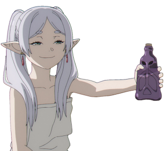

Profile
Frieren ｢フリーレン Furīren?｣
She is the main protagonist of Frieren: Beyond Journey's End.
She was the Mage of the Hero Party and traveled alongside Hero Himmel
She is the Warrior Eisen, and Priest Heiter in a ten-year journeytodefeat the Demon King.
Biographical Information
Gender |
Age |
Species |
Female |
1000+ |
Elf |
| Class |
Rank |
Affiliation |
Mage |
Back-alley Mage
Great Mage
|
Hero Party (formerly)
Frieren's Party
|
| Hair Color |
Eye Color |
White |
Green |
Personality
Frieren has an easy-going personality; however, her aloof attitude makes her a mystery to her peers,
with
Heiter
commenting that they as Humans cannot perceive an Elf's feelings. As an Elf that has lived for at
least
a
millennium,
she has a poor sense of time that manifests in a bad habit of being unable to get up in the morning,
along
with a deeper
inability to comprehend how time passes for Humans. This is, in part, a reason for Frieren's aloof
attitude,
since she
sees large lengths of time as too brief for her to form meaningful connections. For instance, she
thought of
a ten-year
journey with her comrades as short and believed she knew nothing about the Hero Himmel even up until
his
passing.
However, following Himmel's funeral, she made the decision to get to know Humans better.
Although she is generally stoic, carefree, and often lacks tact, Frieren also has things she is
emotionally
sensitive
to. She was embarrassed when others discovered her mana detection is interrupted for a fraction of a
second
when a spell
is cast, a common error for apprentice mages that she hasn't been able to overcome. She is sensitive
to
people calling
her old and held a grudge against Stark for doing so twice. When she is upset, she is capable of
throwing a
tantrum that
can result in her crying for upwards of three days, scaring the other members of the Hero's Party.
It
also
implied that
she is somewhat insecure about her body, as she occasionally shows hints of jealousy over the size
of
Fern's
bust.
Appearance
Frieren is a petite, female Elf with green eyes and long white hair tied into two pigtails. Like all
Elves,
she has
large, pointed ears.
She wears a striped black and white shirt, along with a white jacket with gold embellishments tucked
into
a
matching
skirt with a black belt. Over her jacket, she wears a short white and gold cape with a high collar.
She
also
wears black
tights and brown boots, and a pair of gold and red earrings.
In the past, she let her hair down and wore a simple, white dress.
Abilities
- Immense mana output: Frieren's unrestrained mana output is incredibly high. She is
shown
to
have considerably more mana
than even Aura, a five-hundred year-old demon and one of the Seven Sages of Destruction.
Frieren's
overall mana output
is noted to be comparable to Serie's restrained output.
- Mana concealment: Trained by her mentor, Flamme, Frieren has mastered the art of
concealing
her mana, and she uses it as
a deception strategy against demons. Her skill in concealment is exceptional, and she has
practiced
limiting her mana
for so long that even experienced mages, such as Aura[7] and Falsch[8], cannot detect
instability in
her mana. Only a
few mages have seen through her restriction, the most notable being the Demon King, who saw
through
her in an instant.
She can even suppress her mana enough to avoid detection by a Stille, but only while staying
still.
- Analytical ability: Frieren is highly adept at analyzing magics and countering them.
This
applies even to magic used by
the Seven Sages of Destruction which are said to defy all intelligence and reason. She has
analyzed
and countered the
magic used by two of the Sages of Destruction: Aura the Guillotine and Macht of the Golden
Land.
Along with the Hero
Party, she was also able to break through the impenetrable barrier of Böse the Immortal.
Spells
- Offensive magic: Zoltraak: A simple spell that shoots either a large blast or
multiple
smaller blasts of concentrated
mana. Frieren contributed to the research of this magic, modifying it from Qual's Human
Killing
Magic to Demon Killing
Magic. Due to the novelty of the spell, Frieren is unable to react to it immediately and
instinctively and thus has a
slightly delayed reaction when defending against it.
- Defensive magic: Like most modern mages, Frieren is capable of casting defensive
magic in
the
form of a hexagonal
protective barriers that can defend specific locations or encircle the caster. This defense
spell is
mainly used against
offensive magic like Zoltraak.
- Dispelling magic: Frieren is capable of analyzing an opponent's spell and cancel out
the
effects of the spell. Her staff
glows golden while casting the dispelling magic. It is first seen in use against Aura's
undead
army,
where Frieren frees
corpses from Aura's Auserlese.
- Spell to produce a field of flowers: Frieren was taught her mentor's favorite magic,
magic to
produce a beautiful field
of flowers, which holds sentimental value to her. Frieren is able to choose what flowers
grow as
long as she has seen
the flower before. As per Flamme's last wishes, she grows a field of flowers around her
master's
grave with the spell
and avoids using the spell due to it bringing up memories of her.
- Spell that shuts the door of a treasure vault at the risk of your life: A binding
spell
that
is considered top-rated in
folk magic, which Frieren's Spiegel clone uses to seal the entrance of the Spiegel's main
body
and a
treasure vault. The
seal only break upon the caster's death.
- Destructive Lightning: Judradjim: Frieren casts multiple bolts of lightning from her
staff
directed towards the target.
She is first shown using this during the battle against her Spiegel clone.
- Hellfire Summoning: Vollzanbel: Frieren creates a large blast of fire in front of
herself,
enveloping the
battlefield. It can melt anything such as a falling column when Frieren and her clone used
it at
the
same time.
- "The Height of Magic": An offensive attack that Frieren's clone uses as a last
resort.
Mana
cannot be sensed when the
attack is used, and targets of the attack are unable to recognize it as a spell.[16] It
seems to
create strong gravity
that repels the target.[17] The attack is so strong that it pins Fern against a wall and
destroys
her staff, but it also
leaves the caster's guard completely down.
- Unnamed protective spell: A protective spell that Frieren developed after completing
her
two-month analysis on Macht's
Diagoldze, which was considered a curse. It nullifies it and makes it ineffective.
- Unnamed memory transference magic: An advanced mental magic spell that transfers
memories
from the user to a target, or
from a target to the user. Frieren uses this spell to receive Denken's memories.
- Mana Strike: After being provoked by Solitär into believing that she killed Fern and
Stark, a
silent but angered Frieren
was easily able to cast it against an attacking Solitär and blasts her away, though she is
still
not
yet adept at using
it compared to her.
Manga appearance

Beyond Journey's End Arc
Aura the Guillotine Arc
Travels to Äußerst Arc
First-Class Mage Exam Arc
Continued Northern Travels Arc
Divine Revolte Arc
The Golden Land Arc
Goddess's Monument Arc
Imperial Territory Travels Arc
Foundation Festival Arc
Trivia
Frieren means "being cold" or "to be freezing" in German.
Frieren states that her favorite winter flower is the icicle cherry blossom.
Frieren hates onions.
Throughout her lifetime, Frieren has lost eleven times to mages who have less mana than her. Four
of
those
were demons,
with Qual and Macht among them; one was an elf, and the remaining six were humans.
Frieren placed 2nd in the first official popularity contest.